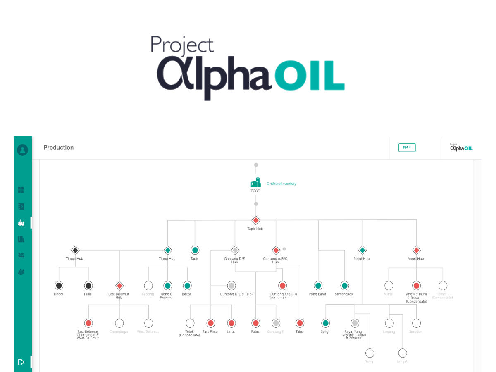
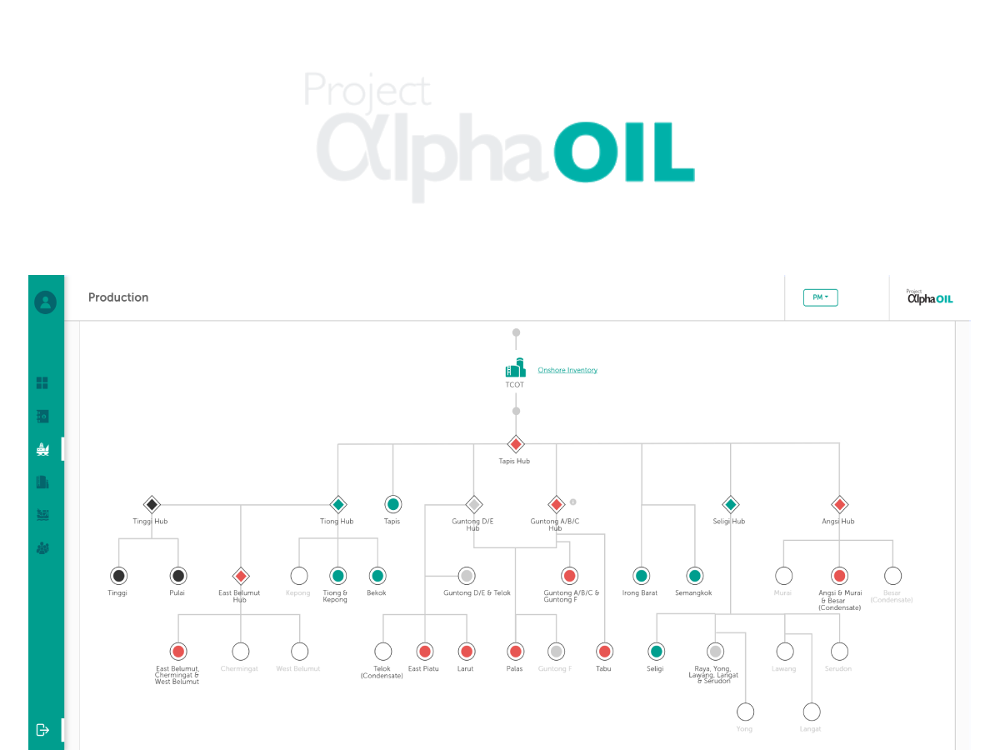
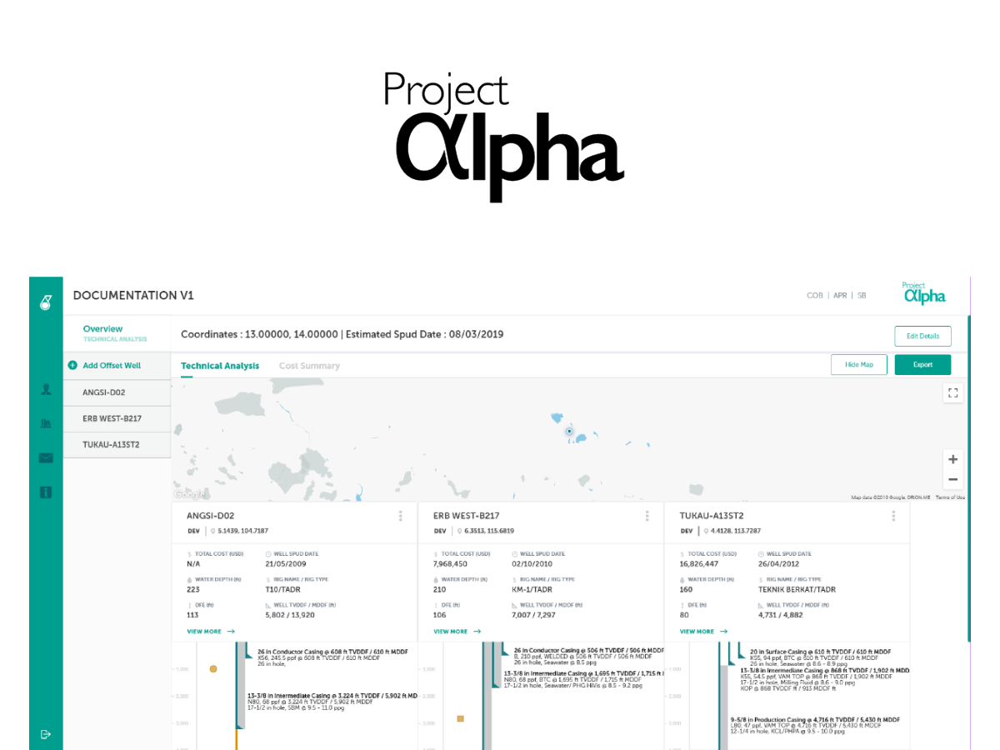
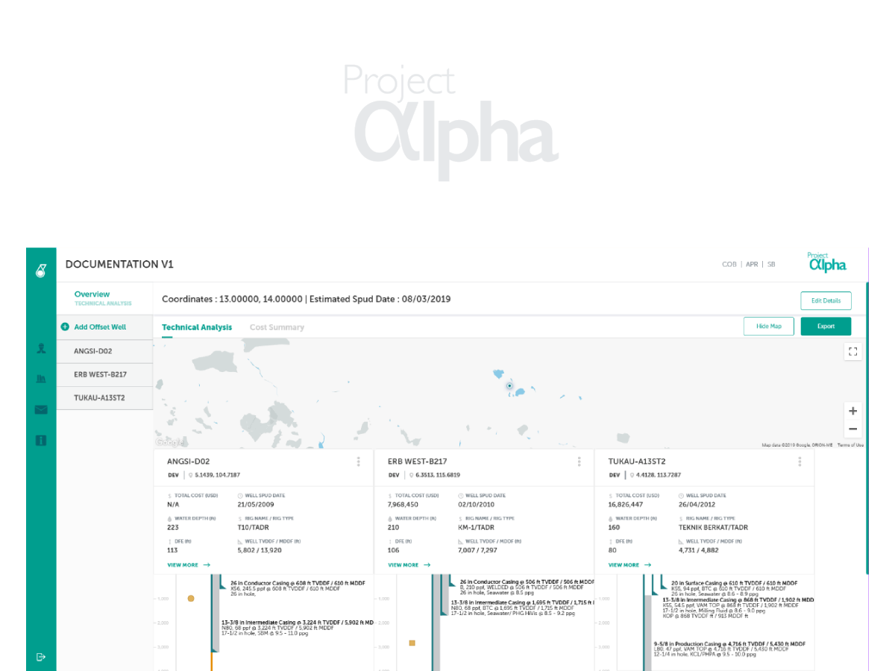
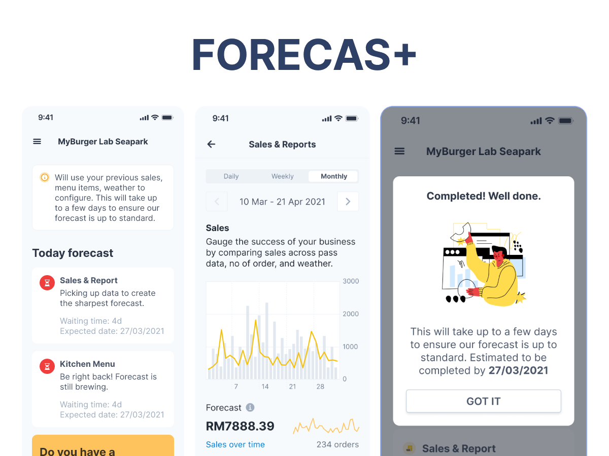
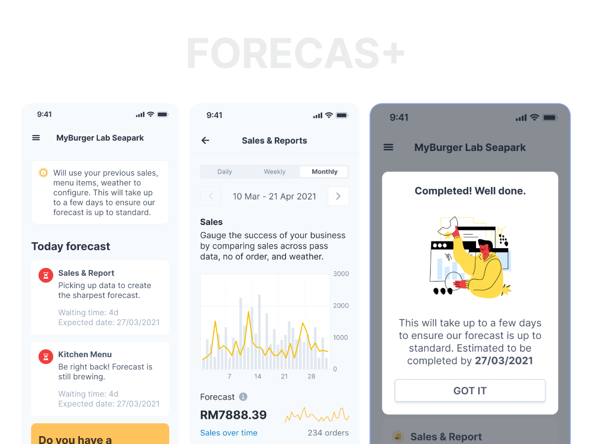
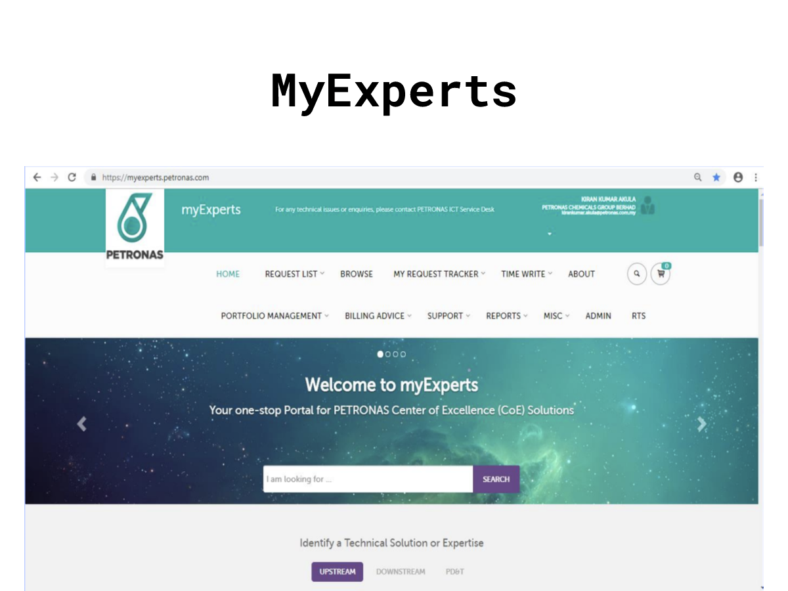
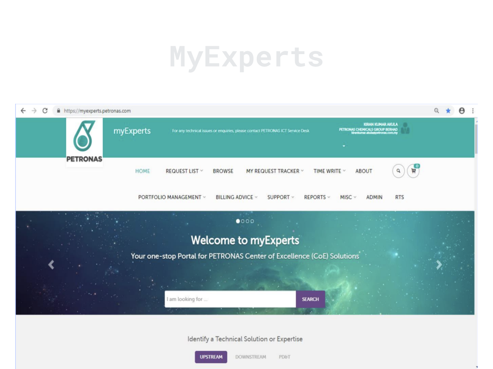

Software engineer in Kuala Lumpur. I build the interfaces and APIs behind job search across six markets at SEEK.
About
I'm a full-stack developer who enjoys crafting clear, visually considered interfaces on top of solid backend work. I build end-to-end: the screen someone uses, and the API it talks to.
I started building for the web in 2018. Since then I've worked at a large consultancy, a product company partnering with Atlassian, and a fast-moving startup. Each one changed how I approach development and how I work with a team.
Right now I'm at SEEK, working on the platforms behind JobStreet and JobsDB that connect millions of job seekers with work across Asia-Pacific.
Working with lately: JavaScript, TypeScript, React, GraphQL, Node.js, AWS and Docker.
Backend development and API standardisation across SEEK's Asian job platforms, JobStreet and JobsDB, building unified REST endpoints for job posting and search in the Philippines, Malaysia, Singapore, Indonesia, Thailand and Hong Kong.
Contribute to platform unification, aligning technical architecture with SEEK's direction across Asia-Pacific to reduce fragmentation and keep the experience consistent.
Implemented experimentation infrastructure in business-critical systems for data-driven product decisions, with zero production incidents thanks to feature flags and rollback mechanisms.
Built reusable internal libraries that enforce consistent architecture and cut duplication across distributed teams.
Set up integration and unit test suites and kept technical documentation current for cross-functional teams.
Developed and maintained in-house products and client websites, mainly in Java, CoffeeScript, HTML and jQuery.
Tested sites across browsers and mobile devices for compatibility and responsiveness.
Worked daily with engineers, designers, producers and clients.
Senior Analyst, Solution Developer, AvanadeJul 2017 – Oct 2020
Kuala Lumpur, Malaysia
Developed and shipped interactive web applications for clients.
Worked closely with Accenture functional teams and clients to solve domain-specific business problems.
Selected work


Alpha Oil
An end-to-end dashboard visualising Malaysia's crude oil supply chain across upstream, midstream and downstream businesses.
I built new modules, features and charts, created and maintained the REST APIs behind the visualisations, and handled enhancements and bug fixes.
React, Node.js, MySQL, Azure


Alpha Wells
Upstream analytics that give engineers historical oil well data for offset studies, helping optimise well designs and save time and cost.
I built custom D3.js charts for complex data sets and turned the design team's wireframes into responsive, interactive React features.
React, D3.js, MySQL


Forecast Plus
An AI-based analytics app that gives restaurant owners and outlet managers predictions from their historical procurement and sales data.
I looked after both the front end and the back end.
React, Node.js, MongoDB, Docker


MyExperts
A platform transformation uniting a client's group and subsidiaries under one system for service management, from order and resourcing through to project closure and billing.
I turned wireframes into responsive features in C#, HTML and CSS, and wrote and maintained the SQL behind the data.